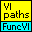

Owning Palette: CalcExpress
This palette contains VIs to support using FuncVIs in applications.
| Palette Object | Description | |
|---|---|---|
 |
Func - FuncVI search paths.vi | Is used to define FuncVI search paths. When CalcExpress needs to call a FuncVI function, it looks through the paths specified in this VI to find the FuncVI for the called function. The full set of search paths includes predefined paths hard-coded in this VI and user-defined paths you can specify, with user-defined paths taking priority. Note that relative paths must be specified relative to the full path of this VI (including the LLB). |
| Func - Load Functions.vi | Explicitly loads FuncVIs into memory. Loading a FuncVI before its corresponding function is called during script execution reduces the execution time of the first call. | |
| Func - Unload Functions.vi | Closes references to FuncVIs. | |